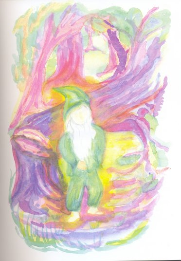
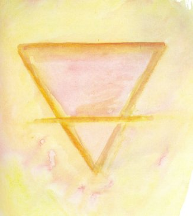
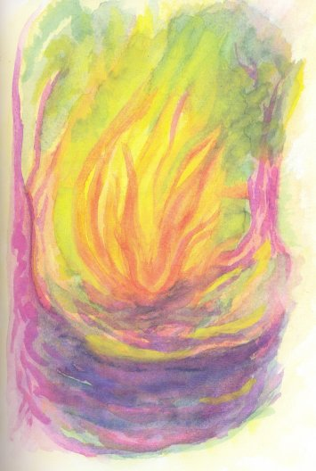
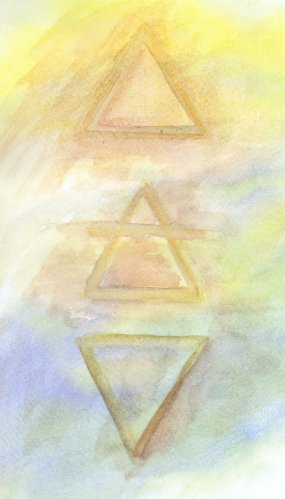
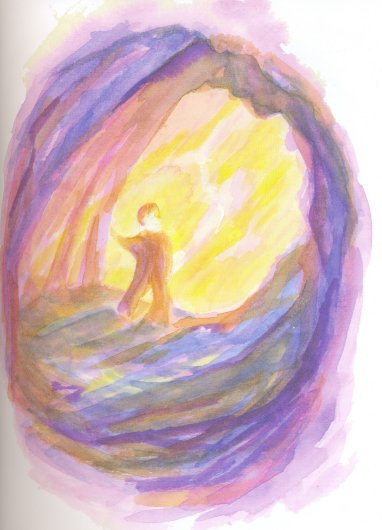
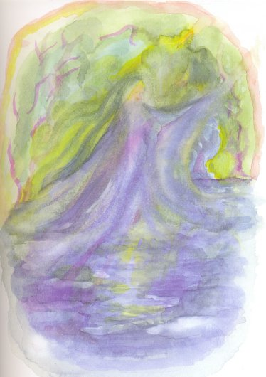
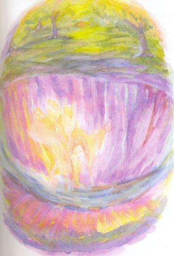
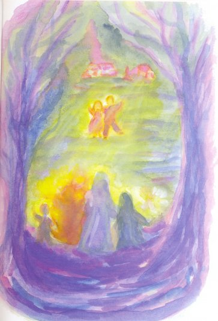

Nicolás and Carolina were lost in the woods and didn’t know which way to turn. Whichever way they went they seemed to get more lost. They sat down on the roots of a tree and Carolina began to cry. Her brother told her not to cry, that they would find their way out eventually, but the truth was that he felt like crying too.
Suddenly, they heard a faint sound of someone moaning: “Oh, oh! help me! oh, oh!” They held their breath and waited. It happened again: “Oh, oh!”
“Maybe it’s only the wind,” Nicolás said.
“No, it’s someone crying for help,” Carolina objected. “What should we do?”
Nicolás thought for a moment. He was older so he had to make the decisions. “Let’s go to where the sound is coming from. If it’s only the wind we won’t find anything. If someone needs help we’ll help them if we can.”
They stood up and walked towards the sound, which was repeated every few seconds. Finally they came upon a fallen tree. A leg was sticking out from under it. The cries for help were coming from under the tree’s branches. They looked at each other, then back at the leg. “A child must be under there,” Nicolás said.
“Don’t just stand there, get me out!” a man’s voice cried.
They tried to lift the tree, but it was heavy and they couldn’t hold it up.
“Wait, I have an idea,” Nicolás said. There was a large, round rock nearby, which he rolled up to the tree. “When I lift the tree you roll the rock under it, Carolina.” He grabbed the tree-trunk with both hands and lifted with all his strength. “Now!” he cried. Carolina was on her knees. She pushed as hard as she could and the rock rolled under the tree. Then Nicolás dropped it on the rock.
“Get me out!” the voice shouted again.
“Nicolás took hold of the leg and pulled. Another leg appeared which Carolina grabbed and they dragged a strange little man from under the tree. When he stood up and brushed himself off, they saw that he wasn’t any taller than Nicolás. He wore a pointed green hat, green shirt and pants, no shoes and had a white beard that reached to his waist.
“They ought to teach these trees better manners than to fall on a body when he’s sleeping,” the little man growled.
“It wasn’t the tree’s fault,” Carolina said.
The little man looked surprised. “It wasn’t mine, either,” he said.
“Aren’t you going to say thank you?” Carolina asked him.
“Don’t be fresh, Carolina,” Nicolás told her.
The little man looked from one to the other and ran his fingers through his beard. “No, Carolina is right.” He took off his hat, bowed almost to the ground and said, “Thank you kindly.”

Carolina giggled. The little man straightened up, put his hat back on and laughed heartily.
“Now, my lovelies, tell me what you are doing alone so deep in the forest.”
“We’re lost,” Nicolás said.
“Lost, are we. And how did that happen?”
“We were going to our Aunt Nélida’s house and we were supposed to take the train that goes around the forest,” Nicolás explained. “But we decided to walk through it instead and we got lost.”
“Did you walk to save the carfare?”
“Yes.”
“Are you poor?”
“Oh no,” Carolina said. “We live in a nice house.”
“We wanted to see if we could do it, too,” Nicolás added.
“Hmm, foolhardy, my boy, foolhardy.”
“Can you tell us how to get to Aunt Nélida’s?” Carolina asked.
The little man stroked his beard. “I think I can help you there, but first you must promise me not to come alone so deep into the forest again, at least not until you’re older.”
“Oh, we won’t,” Carolina said. “Our mamá and papá and Aunt Nélida are going to be worried about us.”
He looked at Nicolás, who said, “Yes, sir.”
“Good. Now, I don’t know where your Aunt Nélida lives, but I have some friends who can show you. Help me gather some kindling wood. We’ll need a fire anyway if were going to roast the potatoes I have in my knapsack.”
They gathered kindling wood and dry leaves and the little man pulled a match the size of a pencil from his coat pocket and struck it on the rock that was still holding up the tree. Soon a fire was crackling away. “Now watch”. He bent down, picked up a twig that had fallen from the kindling, and drew a figure on the ground:

“Are you there, Rusty?” he called. “Ah yes, there you are.”
“Where?” Carolina asked, looking around.
“Look into the fire.”
They looked into the fire and saw a small figure of flame smiling at them.

“That’s Rusty Salamander,” the little man said. “Tell us, Rusty– Where does Aunt Nélida live?”
Rusty Salamander shot out his arm, which was a tongue of flame, to his right and nodded his head three times. Then he disappeared, or at least they could no longer see him. Only dancing flames were visible in the fire.
The little man looked in the direction Rusty Salamander had indicated. “The south-west,” he said, “where the sun will soon be. After we eat these potatoes you go that way. Just follow the sun and you’ll soon reach your Aunt Nélida’s.” He poured a pile of potatoes from his knapsack onto the ground and pushed the twig through one of them and held it close over the fire. “Find twigs and stick them through some potatoes. They’re delicious”.
The children gladly followed his instructions and they were soon eating the roasted potatoes, which were indeed delicious.
“How far is it to Aunt Nélida’s?” Nicolás asked the little man.
“It’s not far to the end of the woods. Once you’re out of the woods you can find it, can’t you?”
“Sure,” Nicolás said.
The little man looked at them both, one after the other, then he smiled and the skin at the corners of his eyes crinkled. “You both look tired. You should have a nap, but before you do I’m going to show you the signs you can use to call my other friends in case you need them”.
He squatted and scratched out three more signs next to the Rusty Salamander sign. This is what he drew:

“You can use the first sign to call Nebenezar Gnome, the second is to call Beatrix Nixie and the third is to call Sylvia Sylph,” he said, pointing to each sign as he said the name.
“How will we know which one to call?” Nicolás asked.
“Oh, that’s easy. If you have an earth problem you call Ebenezer Gnome, if it’s a water problem you call Beatrix Nixie and if the problem has something to do with air, you call Sylvia Sylph. But only call if you really need them. And you have to draw the correct sign first. Will you remember them?”
Carolina, who was sitting against a tree, closed her eyes and her head dropped onto her chest. She had fallen asleep. But Nicolás stared at the signs and said that he would remember them.
“Now rest,” the little man said. “You have a long way to go and the forest can be tricky and dangerous.” Nicolás suddenly felt very sleepy. He lay back and fell asleep on the soft forest ground.
Carolina was the first to wake up. “Nicolás,” she cried, “where’s the little man?” Nicolás sat up and rubbed his eyes and looked around. Loose earth covered the place where the fire had been. The signs the little man had scratched in the ground were no longer there. “He must have erased them”, Nicolás said.
“What?”
“The signs. But never mind, let’s go.”
They set off following the sun in the south-west. After what seemed a long time but wasn’t really, they heard thunder and saw a lightning bolt in the sky. “It’s going to rain,” said Nicolás. “Look, there’s a place we can take shelter.” Off to their right was a hill with a cave in its base. They ran to it and scrambled inside. They huddled together and watched the rain fall in sheets outside. Suddenly lightning struck the hill above them and a huge rock fell across the entrance of the cave, shutting them in. Nicolás pushed the rock but it didn’t move.
“What are we going to do now?” Carolina asked him.
Nicolás thought a moment, then took from his pocket the twig the little man had used to scratch the signs in the ground and drew one of them on the floor of the cave:

“Ebenezer Gnome, please come and help us.” They waited. At first nothing happened, then they heard a noise behind them. They turned around and saw a boy dressed all in brown, who was about as high as Nicolás’s knees. He walked between them, kicked the rock and it fell away as though it were a pebble. Then he walked back into the interior of the cave, smiling shyly as he passed them.

“Thank you, Ebenezer Gnome,” Carolina said.
The children crawled out of the cave into the sunlight. The forest was wet from the rain and everything seemed to shine. They continued on their way, still following the sun, which was now farther down in the sky. They soon came to a rapidly flowing river. It wasn’t very wide but it seemed deep. Not far downstream a tree that had been struck by lightning lay across the river.
“We can cross on that tree,” Nicolás said. They climbed onto the base of the tree where its roots were and started across, Nicolás leading the way. When they were at midstream a branch on the other side cracked because of the extra weight and the trunk they were on turned, just a little, but it was enough to make Nicolás lose his balance and fall into the river. Carolina fell onto the trunk and hugged it so she wouldn’t fall off. She watched in horror as her brother was swept downstream. She remembered the water-being’s name and hoped she would get the sign right. She pulled a hair-clip from her ponytail and scratched the water sign as well as she could onto the bark of the tree:
“Beatrix Nixie, Please come,” she cried. “Help Nicolás”.
No sooner had she pronounced the word “Nixie”, than a green-haired girl in a blue dress rose from the water in front of Nicolás and raised her arm. The river’s current reversed and brought Nicolás rushing back to Carolina. She gave him her hand and he climbed back up onto the tree. He rested a while and then they made their way to the other bank.

As they walked on Carolina said, “Do you think something else is going to happen, Nico?”
“I don’t know. But if it does, we have our friends to help us.”
“We’re really lucky to have met that little man,” Carolina said.
Something else did happen. They came to a very deep chasm that extended on both sides as far as they could see and was about ten yards wide.
“What are we going to do now, Nico?” Carolina asked her brother.
The sun was now so low in the sky that they could no longer see it, only its glow above the trees. If they couldn’t get across the chasm soon they’d have to spend the night in the woods. Nicolás’s clothes were still wet and it was beginning to get cold.
Nicolás felt in his pocket, but the twig was gone. He picked up another and scratched the air sign on the ground:
“Sylvia Sylph, are you there?” he called. The figure of a little girl, even smaller than Ebenezer Gnome, appeared before them. She was hard to see because she was transparent and flowed from place to place without touching the ground.
“We have to get across the chasm, Sylvia Sylph. Can you help us?” Nicolás said.
Sylvia Sylph smiled and came closer. They felt a rush of warm air under them that lifted them up high over the chasm and set them down softly on the other side.

“Oh, thank you, Sylvia,” Carolina said, but Sylvia Sylph was nowhere to be seen.
“Come on, Carolina,” Nicolás said, “before it gets dark”.
It didn’t take them long to reach the edge of the forest from where they could see Aunt Nélida’s farmhouse with its lights already on. They ran towards it. When they were almost there they turned and looked back at the forest. The little man stood at its edge, with Rusty Salamander and Ebenezer Gnome on his left and Beatrix Nixie and Sylvia Sylph on his right. He wore a white tunic with a golden star embossed on it, which glowed in the twilight through his beard.
Carolina and Nicolás waved to them and all five waved back. Then they vanished.
“The Star-man, that’s what I’ll call him,” Carolina said.
“Yeah,” Nicolás agreed, “That’s who he must be.”
When Carolina and Nicolás entered the kitchen, Aunt Nélida was cooking dinner.
“Hi,” she said. “I was just about to call your mother. I thought you were going to take an earlier train.”
“We came through the forest,” Nicolás said. “That’s why we’re late.”
Aunt Nélida laughed. “Oh really?” She didn’t believe that two small children could walk alone through the forest.
“But we won’t do it again, not till we’re older,” Carolina said. “We promised the Star-man.”
Aunt Nélida looked at them more closely and saw that Nico’s clothes were still wet. Then they told her everything that had happened to them. They repeated the story often after that. Many grown-ups didn’t believe them, but the children did. And so, finally, did their Aunt Nélida and their mamá and papá.
